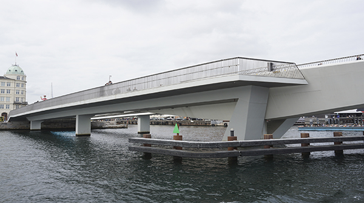
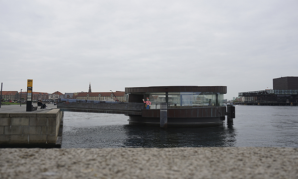
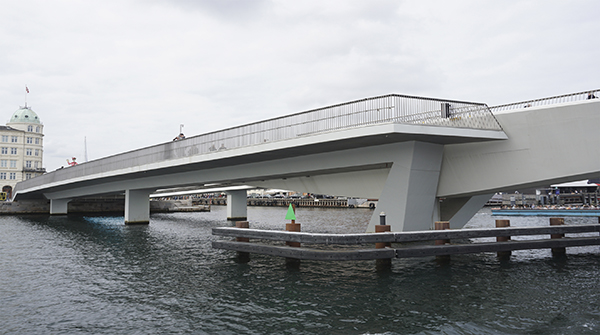
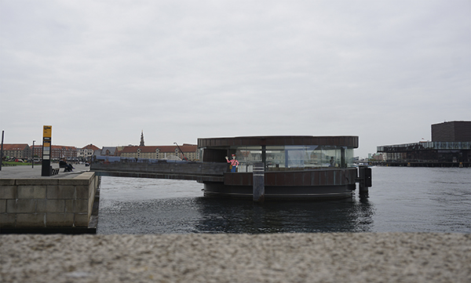
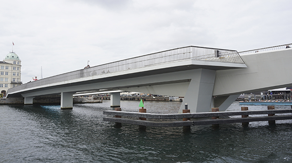
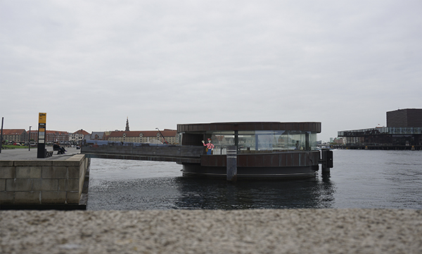
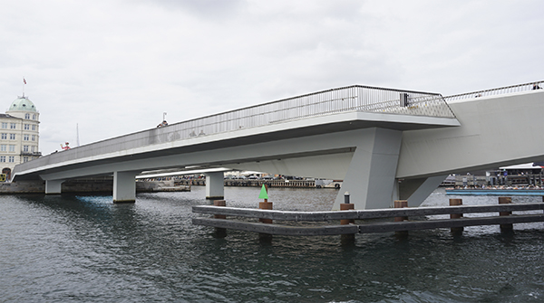
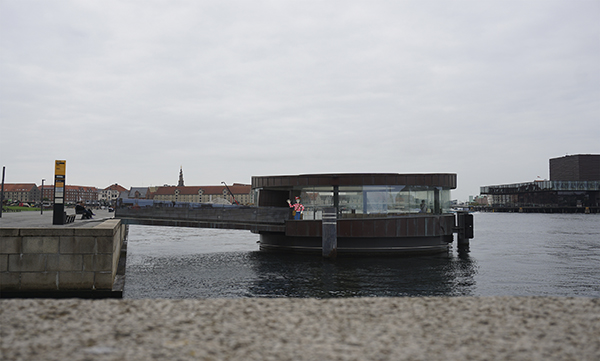

Find Holger
Vi fik stillet en opgave, hvor i vi skulle fremvise nogel af de billeder vi tog på vores bro udflugt. Der var ingen krav udover at vise dem frem på en kreativ måde.
Jeg valgte at lave en lille gemmeleg i mine billeder. Ideen var at jeg ville have beskueren til at kigge billede godt igennem i detaljer, derfor har jeg gemt Holger i alle billederne.